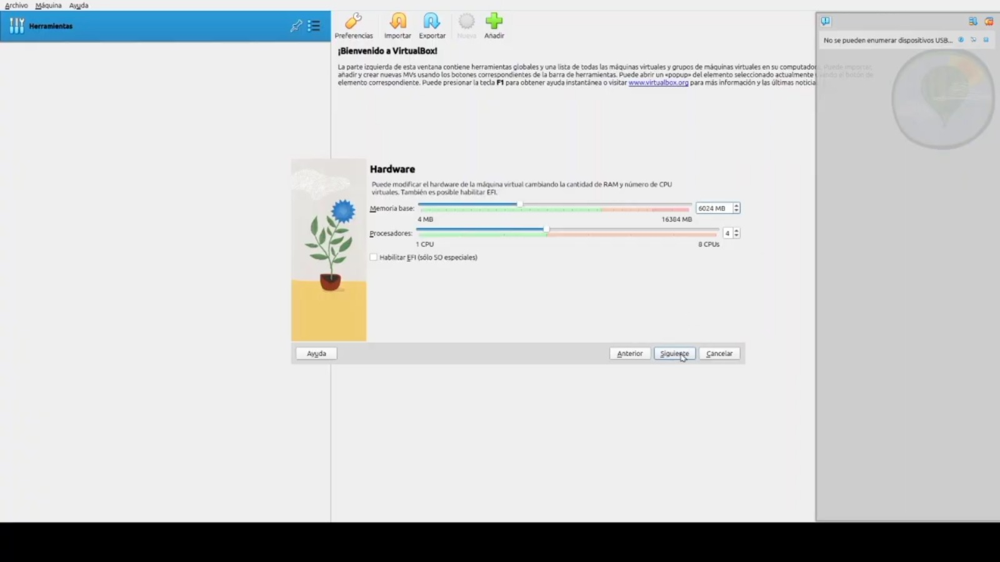
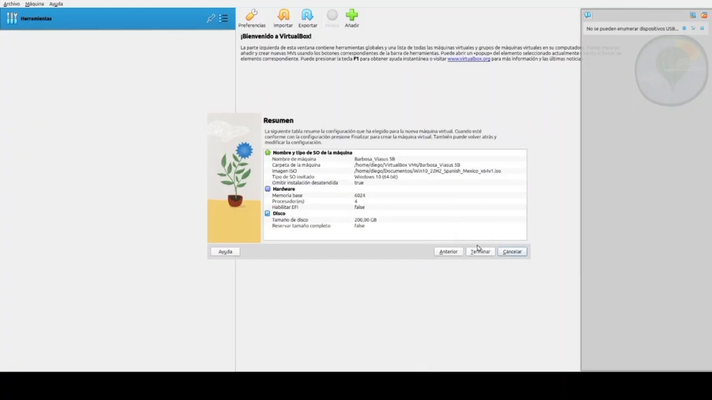
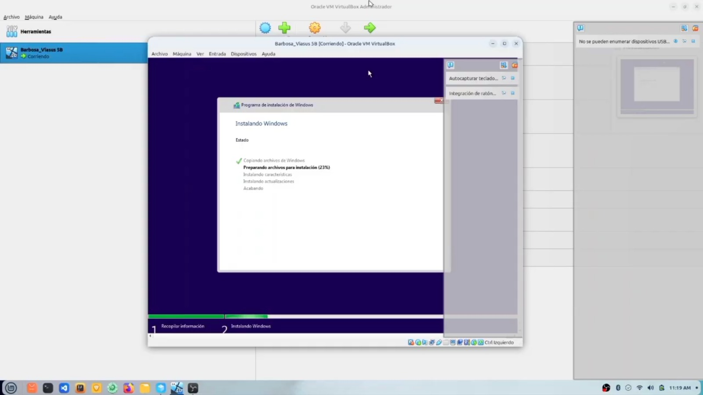
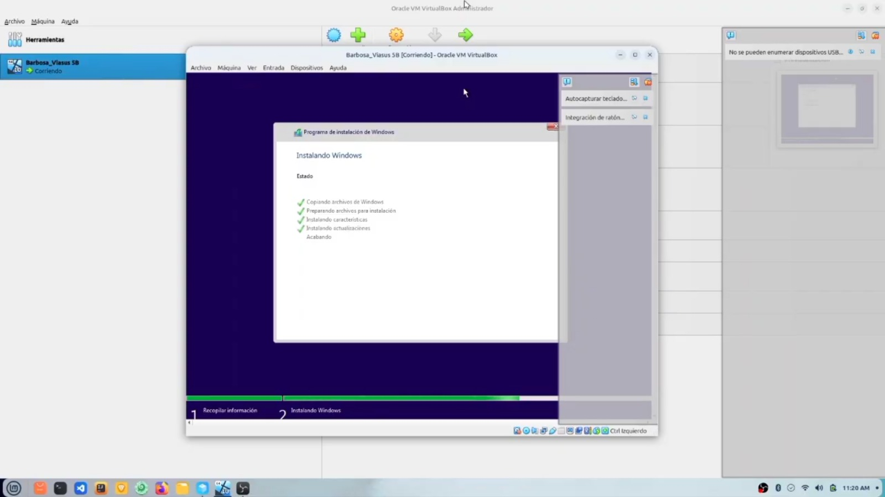
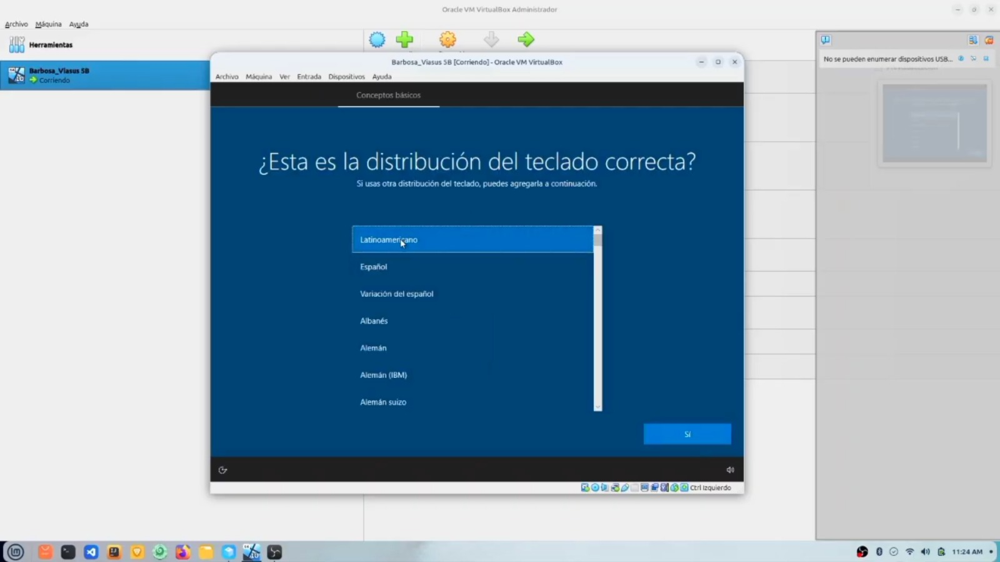
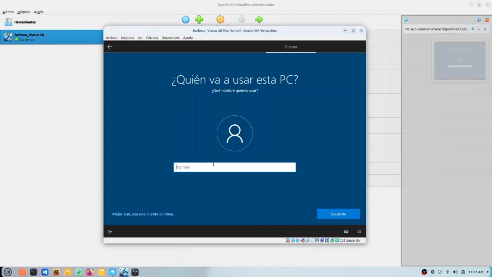
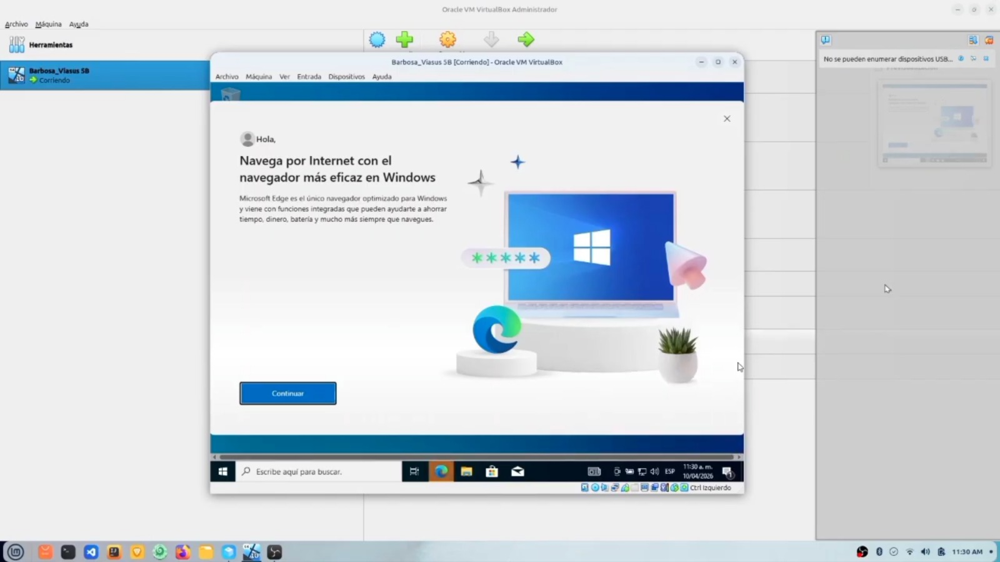

1
Virtual Box
Abrir Virtual Box, seleccionar "Crear nuevo disco virtual" asignar nombre y sistema operativo luego sigue las instrucciones para configurar el tamaño y formato del disco y la memoria ram.

CMD y PowerShell
Aprende paso a paso cómo instalar Windows desde Virtual Box de forma sencilla y segura.
📖 Comenzar guíaSoy tu asistente virtual. Te acompañaré durante todo el proceso de instalación de Windows para que no tengas ningún problema.
Abrir Virtual Box, seleccionar "Crear nuevo disco virtual" asignar nombre y sistema operativo luego sigue las instrucciones para configurar el tamaño y formato del disco y la memoria ram.

Haz clic en Crear o iniciar y tu máquina virtual quedará lista para instalar el sistema operativo y esperas hasta que se reinicie, ya despues te mostrara una imagen de istalacion de windows.

Ya te esta mostrando la imagen de instalación de Windows solo tienes que esperar que se complete al 100% ya que si no se copleta no se podrá continuar.

ya que veas que no se precento ningun error durante la intalacion inicial, que todos los pasos se hayan completado correctamente se reiniciará.

Ya que halla reiniciado, podemos continuar con la configuración inicial, te mostrara en que region, la distribución del teclado, y luego tienes que esperar.

Luego que esperaras unos minutos podras continuar con la configuración de colocarle nombre al equipo, te haran preguntas de seguridad luego hay cofiguras el equipo como tu quieras.

Despues de que configuraras el equipo, tendras que esperar unos minutos mas ya que windows estara intalando la ultimos retoques para puedas utlizarlo y luego windows te dara la bienvenida.
